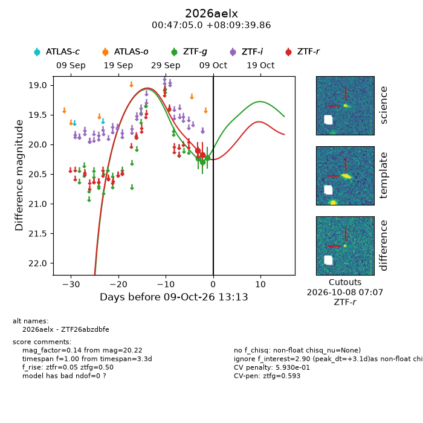
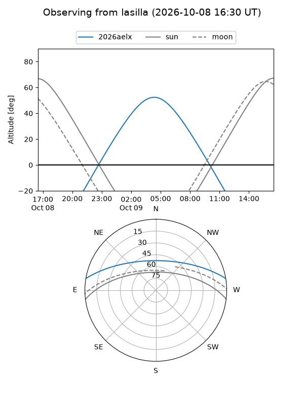
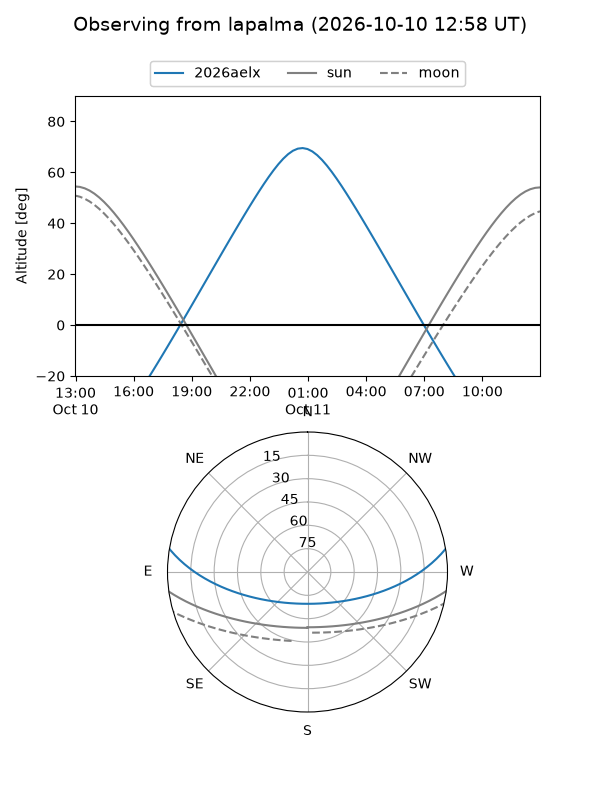
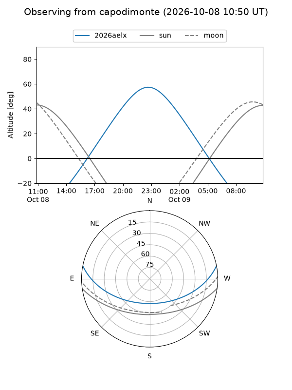
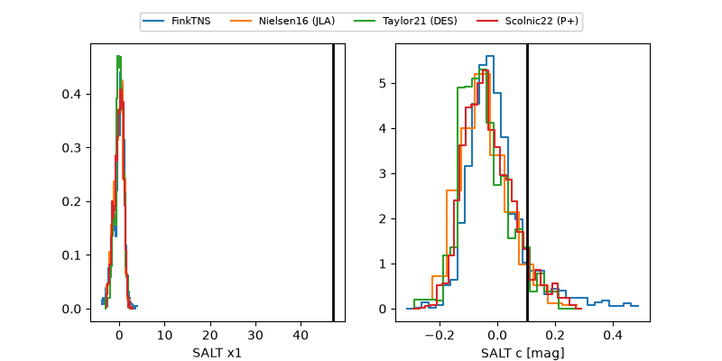

2026aelx
Target 2026aelx at 2026-10-09 13:16
Aliases and brokers:
FINK-ZTF: ztf.fink-portal.org/ZTF26abzdbfe
Lasair-ZTF: lasair-ztf.lsst.ac.uk/objects/ZTF26abzdbfe
ALeRCE-ZTF: alerce.online/object/ZTF26abzdbfe
YSE-PZ: ziggy.ucolick.org/yse/transient_detail/2026aelx
TNS name: wis-tns.org/object/2026aelx
Direct TNS query: direct search
alt names
ZTF26abzdbfe (ztf,fink_ztf)
2026aelx (tns,yse)
Coordinates:
equatorial (ra, dec) = 11.7707,+8.16107
equatorial (HMS+DMS) = 00:47:04.97,+08:09:39.86
galactic (l, b) = (121.0669,-54.69490)
Flags:
peak dt: +3.1
likely cv: !!
Photometry:
last ztfg=20.22, ztfr=20.17
3 ztfg, 2 ztfr detections
Lightcurve

Visibility



Additional plots
